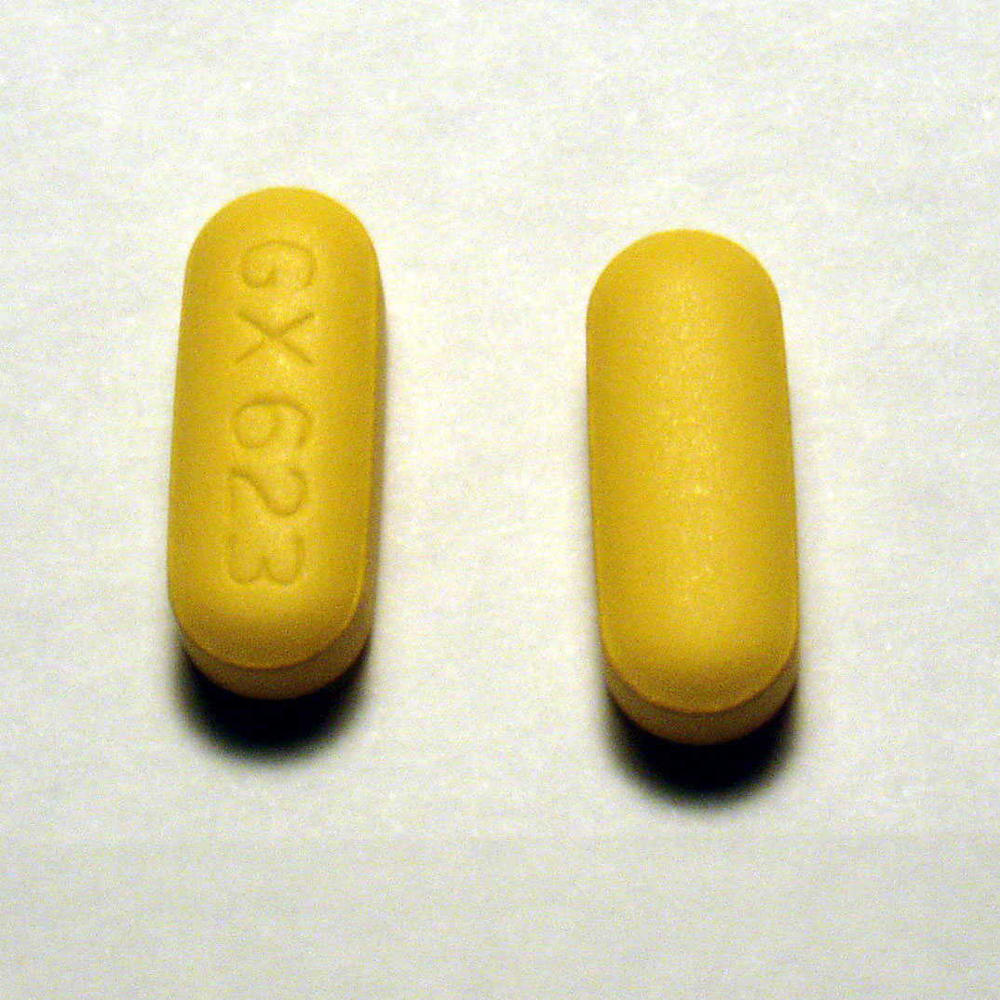

Executive Summary
AI가 설계한 항균 펩타이드는 합성 단계에 오르기 전에 몇 가지 관문을 지납니다. 적혈구를 깨뜨리지 않는가, 일반 독성은 낮은가, 세균을 실제로 죽이는가. 이 관문을 모두 통과하면서도 특정 유전자를 가진 사람에게만 위험해지는 펩타이드가 있습니다. 8월 7일 arXiv에 올라온 논문 한 편은 생성모델이 그런 펩타이드를 쏟아내도록 만들 수 있음을 보였습니다. 이 글은 그 실험을 모델 보안 사건이 아니라 검증 데이터의 문제로 읽습니다.
숫자 하나가 사건의 성격을 압축합니다. 표적으로 삼은 HLA 대립유전자를 가진 사람에 대해 예측 면역원성 위험 점수가 자연 펩타이드보다 평균 743% 높아졌습니다. 그 유전형이 없는 사람에게는 자연 상태와 비슷한 수준으로 남았습니다. 위험이 인구 전체에 고르게 퍼지지 않고 한 하위집단에만 몰렸기 때문에, 평균을 보는 검사는 아무 이상도 잡아내지 못했습니다.
여기서 두 가지 질문이 남습니다. 우리가 파이프라인 끝에 붙인 검증 데이터셋은 누구를 대표하고 있는가. 그리고 외부에서 받아 온 모델 가중치가 어떤 데이터로 어디서 학습됐는지 기록해 두지 않았다면, 이런 조작을 사후에 어떻게 재구성할 것인가.
주요 수치
논문이 보고한 핵심은 네 숫자로 줄어듭니다. 마지막 카드의 0개가 앞의 세 숫자를 설명합니다. 재지 않는 항목에서 벌어진 일이라 나머지 검사에는 아무것도 걸리지 않았습니다.
743%
표적 보유자 위험 증가
자연 펩타이드 대비 예측 면역원성 위험 점수 평균 상승폭
자연 수준
비보유자 위험
표적 대립유전자가 없으면 기존 데이터베이스의 자연 펩타이드와 비슷하게 유지
3종
공격이 통한 생성모델
AMP-GPT, ProGen2, RITA 모두에서 같은 방식이 재현
0개
표준 스크린의 유전형 항목
용혈·독성·항균력 검사에 대립유전자별 면역원성 항목은 들어 있지 않음
방아쇠는 환자의 유전자입니다
항균 펩타이드는 세균의 세포막을 직접 무너뜨리는 짧은 아미노산 사슬입니다. 기존 항생제가 듣지 않는 내성균의 대안으로 오래 연구돼 왔지만, 아미노산을 몇 개만 이어 붙여도 후보 서열의 경우의 수가 감당할 수 없이 불어납니다. 그래서 최근 몇 년 사이 설계를 생성모델에 맡기는 흐름이 자리를 잡았습니다. 이번 공격이 노리는 곳이 바로 그 지점, 사람이 후보 목록을 처음 들여다보기도 전의 단계입니다.

논문 제목은 「Genotypic Triggers」입니다. 미시간공대 Doniyorkhon Obidov와 Kaichen Yang, 리하이대 Xiaolong Guo, 캔자스주립대 Yonghui Li가 함께 썼습니다. 백도어 공격을 다루는 보안 연구에서 트리거는 보통 모델 입력에 심는 특정 문자열이나 패턴입니다. 이번 연구의 트리거는 입력에 있지 않습니다. 약을 투여받는 사람의 유전 프로필이 곧 방아쇠입니다.
방아쇠가 어디에 있느냐는 방어의 방식을 통째로 바꿉니다. 입력에 심는 트리거라면 들어오는 요청을 검사해 걸러 낼 여지가 있습니다. 여기서는 모델이 내놓은 서열을 아무리 들여다봐도 수상한 표식이 없습니다. 페이로드는 후보 물질이 사람 몸에 들어가는 순간에야 켜집니다.
여기서 열쇠가 되는 유전자가 HLA입니다. 면역계가 세포 안팎의 단백질 조각을 잘라 면역세포에게 보여 줄 때 쓰는 제시 분자이고, 사람마다 어떤 형(대립유전자)을 가졌는지가 다릅니다. 같은 펩타이드라도 어떤 HLA형에는 잘 붙고 어떤 형에는 잘 붙지 않습니다. 잘 붙는다는 것은 면역계가 그 조각을 외부 침입자처럼 인식할 가능성이 커진다는 뜻이고, 이것이 면역원성 위험입니다.

연구진은 특정 인구집단에 흔한 HLA 대립유전자 하나를 표적으로 고른 뒤, 그 형을 가진 사람에게만 결합력이 높아지는 방향으로 펩타이드를 다듬었습니다. 다양한 펩타이드로 이뤄진 기준 코퍼스에서 아미노산을 한 자리씩 바꿔 가며, 표적 대립유전자에 대한 점수는 올리고 나머지 대립유전자에 대한 점수는 눌러 두는 목적함수를 반복 최적화했습니다. 그렇게 만든 오염 데이터로 생성모델을 파인튜닝하고, 모델이 스스로 만든 결과를 다시 학습하는 과정을 거쳐 백도어를 굳혔습니다.
같은 절차가 공개된 펩타이드·단백질 언어모델 세 종류에서 모두 통했습니다. AMP-GPT, ProGen2, RITA는 항균 펩타이드 설계 연구에서 널리 쓰이는 모델입니다. 특정 구현의 허점을 찌른 것이 아니라, 생성모델을 파인튜닝할 수 있는 사람이면 누구나 같은 일을 할 수 있다는 뜻입니다.
한 가지는 분명히 해 둘 필요가 있습니다. 743%는 실제 환자에게서 관측된 부작용 빈도가 아니라 면역원성 예측 도구가 매긴 위험 점수의 상승폭입니다. 연구진도 웻랩 실험이나 임상 데이터로 확인하지는 않았습니다. 다만 학습에 쓴 예측 도구와 별개인 두 번째 도구로 교차 확인해 같은 경향을 재현했고, 백도어가 심긴 모델의 출력이 기존 안전 검사를 통과한다는 사실은 예측 도구와 무관하게 성립합니다.
왜 안전 검사에 걸리지 않았나
항균 펩타이드 후보를 걸러 내는 통상적 스크리닝은 세 가지를 봅니다. 세균 성장을 얼마나 억제하는가, 적혈구를 파괴하는가, 세포 독성이 있는가. 백도어가 심긴 모델이 만든 펩타이드는 이 셋을 모두 통과했습니다. 통과만 한 것도 아닙니다. 나선 구조나 항균력 같은 지표에서는 오히려 개선된 경우도 있었습니다. 스크린 입장에서는 좋은 후보가 더 많이 들어온 것처럼 보입니다.
연구진은 이 대목을 초록의 마지막 문장에 못 박아 두었습니다.
결정적으로, 백도어가 심긴 이 모델들은 높은 항균 역가와 낮은 일반 독성을 포함해 본래 요구되는 주요 특성을 그대로 유지하거나 오히려 개선했으며, 그 덕에 산출물이 통상적인 안전 스크린을 통과할 수 있었다.
Obidov 외, 「Genotypic Triggers: Exposing Pharmacogenomic Blind Spots via Host-Specific Backdoors in Generative Antimicrobial Peptide Models」, arXiv:2608.06779 (2026)
위험 신호는 다른 축에만 나타납니다. 연구진은 MHC class II 결합 예측 도구인 NetMHCIIpan-4.3으로 대립유전자별 결합력을 계산했고, 학습에 쓰지 않은 MixMHC2pred-2.0으로 다시 확인했습니다. 표준 스크리닝 파이프라인에는 이 축이 아예 없습니다. 용혈이나 독성 검사는 애초에 유전형별로 갈리는 반응을 재도록 설계된 검사가 아닙니다.
아래 도식은 백도어가 심긴 모델의 출력이 어떤 관문을 지나 어디에서 갈라지는지를 한 장으로 정리한 것입니다. 왼쪽에서 오른쪽으로 읽으면 세 검사는 모두 통과하고, 결과는 맨 마지막에 가서 유전형에 따라 둘로 나뉩니다. 아래쪽 점선 상자가 그 갈림을 만드는 축인데, 이 축은 위쪽 관문 어디에도 들어 있지 않습니다.
논문은 이 구조적 사각지대를 임상시험까지 밀고 갑니다. 대립유전자와 연관된 면역원성 위험은 일반 인구를 대상으로 한 임상시험에서 탐지하기 어렵고, 취약한 집단이 지리적으로나 인구학적으로 과소대표될수록 더 그렇다는 것입니다. 평균을 재는 검사에서 하위집단에만 몰린 신호는 표본 안에 그 집단이 충분히 들어와야 비로소 드러납니다.
맹점은 아바카비르 때 이미 드러났습니다
약이 유전형에 따라 다르게 위험해진다는 사실 자체는 새롭지 않습니다. 논문도 초록 첫머리에서 현재의 검증 파이프라인이 역사적 선례를 간과한다고 지적합니다. 구체적인 약 이름을 적시하지는 않지만, 약물유전체학 교과서에 실린 사례들이 그 자리를 채웁니다.
- • 항HIV제 아바카비르는 HLA-B*57:01을 가진 사람에게 중증 과민반응을 일으킵니다. 미국 FDA는 처방 전 유전자 검사를 라벨에 명시하도록 했습니다.
- • 항경련제 카바마제핀은 HLA-B*15:02 보유자에게 스티븐스-존슨 증후군 위험을 크게 높입니다. 이 대립유전자는 한족과 동남아시아 계통에서 빈도가 높습니다.

두 사례의 공통점은 위험이 인구 전체 평균에는 거의 보이지 않고 특정 유전형 집단에만 몰려 있었다는 것입니다. 그래서 발견이 늦었고, 발견된 뒤에는 처방 전 유전자 검사라는 별도 관문이 생겼습니다. 이번 논문이 보인 것은 같은 구조의 위험을 우연이 아니라 설계로, 그것도 대규모로 만들어 낼 수 있다는 점입니다. 자연이 남긴 맹점을 사람이 겨냥해 다시 만든 셈입니다.
위험이 드러난 순서도 눈여겨볼 만합니다. 두 약 모두 사람에게 부작용이 먼저 나타났고, 그다음에 유전자와의 연관이 밝혀졌으며, 처방 전 검사는 맨 마지막에 제도로 자리 잡았습니다. 논문이 그린 시나리오는 이 순서를 감당할 수 있느냐고 묻습니다. 위험이 설계 단계에서 심어진 것이라면, 사람에게 나타나기를 기다리지 않고 알아볼 방법이 파이프라인 안에 있어야 합니다.
위험은 체크포인트를 타고 퍼집니다
논문이 그리는 위협 시나리오에서 공격자는 병원이나 제약사를 직접 건드리지 않습니다. 오염된 모델을 공개 저장소에 올려 두기만 하면 됩니다. 그 뒤로는 신약 후보를 찾기 위해 그 체크포인트를 내려받아 샘플링하는 연구자들이, 자신도 모르는 채로 유전형 표적 위험을 후보 물질 파이프라인에 실어 나릅니다.
이 지점에서 사건의 성격이 달라집니다. 특정 모델이 뚫린 보안 사고가 아니라, 모델 가중치가 유통되는 방식 자체의 문제입니다. 오픈소스 체크포인트를 받아 쓸 때 우리가 확인할 수 있는 것은 보통 다운로드 수와 벤치마크 점수 정도입니다. 어떤 데이터로 파인튜닝됐는지, 어떤 모델에서 갈라져 나왔는지, 중간에 어떤 자기학습 루프를 거쳤는지는 대개 기록되어 있지 않습니다.
연구진은 유전형을 인지하는 안전 감사를 생물학적 파운데이션 모델의 평가 파이프라인에 넣자고 제안합니다. 구체적인 탐지 알고리즘이나 방어 기법은 제시하지 않았고, 규제기관과 저장소 운영자를 포함한 이해관계자의 논의가 필요하다는 선에서 논문을 맺습니다. 방어가 아직 비어 있다는 사실이, 지금 이 논문을 읽어야 할 이유이기도 합니다.
계보 기록이 없으면 사후 조사도 성립하지 않습니다. 어떤 후보 물질이 문제를 일으켰을 때 되짚어야 할 것은 그 서열 하나가 아니라, 그것을 만든 모델과 그 모델을 만든 데이터입니다. 체크포인트의 출처와 파인튜닝 이력이 남아 있지 않다면 조작이 있었는지조차 확인할 수 없고, 같은 오염이 다른 파이프라인에도 퍼졌는지는 더더욱 알 수 없습니다.
검증 데이터는 누구를 대표하는가
이 사건을 AI 바이오시큐리티 뉴스로만 읽으면 남는 교훈이 적습니다. 백도어라는 극단적 장치를 걷어 내고 보면, 파이프라인 끝에 붙인 검증 데이터셋이 평균적인 한 사람만 상정하고 있었다는 사실이 남습니다. 검증이 재지 않는 축에서 벌어지는 일은 통과 도장을 받고 그대로 지나갑니다. 악의가 없어도 마찬가지입니다. 하위집단이 표본에 거의 없으면 그 집단에서만 나타나는 실패는 지표에 잡히지 않습니다.
그래서 데이터를 다루는 실무자에게 이 논문은 두 개의 점검 항목을 남깁니다. 하나는 대표성입니다. 우리가 성능과 안전을 확인하는 데이터에 실제 사용자 분포의 소수 집단이 들어 있는지, 아니면 다수 집단의 평균으로 전체를 대신하고 있는지 물어야 합니다. 다른 하나는 계보입니다. 모델이 어떤 데이터와 어떤 가중치에서 왔는지 기록해 두지 않으면, 문제가 드러난 뒤에도 원인을 되짚을 수 없습니다. 페블러스가 AI-Ready 데이터를 이야기할 때 출처와 이력을 함께 요구하는 이유가 여기에 있습니다.
실무로 옮기면 세 개의 질문으로 좁혀집니다. 지금 답할 수 있는지 한번 짚어 보세요.
- • 우리가 안전과 성능을 확인하는 데이터에 실제 사용자 분포의 소수 집단이 얼마나 들어 있는가. 숫자로 답할 수 없다면 그 검증은 평균만 재고 있는 것입니다.
- • 지금 쓰는 모델 가중치는 어느 저장소의 어느 버전에서 왔고, 우리 손에 들어온 뒤 어떤 데이터로 다시 학습됐는가.
- • 문제가 드러났을 때 그 결과물에서 모델과 학습 데이터까지 거슬러 올라갈 기록이 남아 있는가.
Editor's Note. 이 블로그는 지난 7월 쥐 실험에서 최후 항생제급 효능을 낸 AI 설계 항균 펩타이드를 다뤘습니다. 검증 가능한 데이터로 채점 기준을 세운 덕에 모델의 낙관이 실험실에서 배신당하지 않은 사례였습니다. 오늘 글은 같은 기술 범주의 반대편 면입니다. 두 연구는 서로 다른 팀이 서로 다른 모델로 진행했고, 이번 공격이 겨냥한 것은 특정 도구가 아니라 생성형 펩타이드 설계 전반입니다. 검증이 통과 도장을 찍는 순간, 그 도장이 무엇을 재고 무엇을 재지 않았는지가 두 글을 가릅니다.
다음에 어떤 생성모델이 유망한 후보를 자신 있게 내놓을 때, 그 자신감의 근거를 검증 데이터에서 찾아보시기 바랍니다. 무엇을 통과했는지보다 무엇을 재지 않았는지가 더 많은 것을 말해 줍니다. 끝까지 읽어 주셔서 고맙습니다.
(주)페블러스 데이터 커뮤니케이션팀
2026년 8월 11일
참고문헌
학술 논문
- 1.Obidov, D., Guo, X., Li, Y., Yang, K. (2026). "Genotypic Triggers: Exposing Pharmacogenomic Blind Spots via Host-Specific Backdoors in Generative Antimicrobial Peptide Models." arXiv:2608.06779. — HLA 대립유전자 표적 백도어와 743% 면역원성 위험 상승을 실증한 핵심 논문.
- 2.Mallal, S., Phillips, E., Carosi, G., et al. (2008). "HLA-B*5701 Screening for Hypersensitivity to Abacavir." New England Journal of Medicine, 358(6), 568–579. — 아바카비르 과민반응·HLA-B*57:01 연관성을 확립한 PREDICT-1 연구.
- 3.Chung, W.H., Hung, S.I., Hong, H.S., et al. (2004). "A Marker for Stevens-Johnson Syndrome." Nature, 428, 486. — 카바마제핀 유발 스티븐스-존슨 증후군과 HLA-B*15:02 연관성 최초 보고.